I Encuentro Nacional de Asesores 2026
Tres días en la Casa Monseñor Ibarra, en Caracas, para que asesores de pastoral juvenil, pastoral familiar, consejos de laicos y movimientos se pusieran de acuerdo en líneas de trabajo, con el lema «Él se acercó y se puso a caminar con ellos».
Datos del evento
- Fecha
- Del 16 al 18 de junio de 2026
- Hora
- No publicada en las notas oficiales.
- Modalidad y lugar
- Presencial · Casa Monseñor Ibarra, Montalbán, Caracas, que las notas oficiales dicen ser sede de la CEV
- Organiza
- Centro de Laicos, Familia y Juventud, del SPEV de la Conferencia Episcopal Venezolana
- Estado
- Realizado
Cómo fue
El martes 16 de junio la directora del Centro, Saritza Roque, abrió el encuentro y explicó su objetivo: pasar del yo al nosotros. La primera jornada empezó con oración, lectura del Evangelio y la «Conversación en el Espíritu», un método de escucha que marcó el estilo de los tres días. Esa noche, un obispo auxiliar de Caracas guió la adoración eucarística.
El director del Instituto Nacional de Pastoral (INPAS), diácono, presentó el Plan Trienal de la CEV, y los coordinadores de cada área del Centro expusieron los proyectos en marcha. La secretaria de la Comisión Nacional de Prevención, Cultura del Buen Trato y Salvaguarda habló de cómo crear ambientes seguros en cada parroquia. Un teólogo invitado guió el diálogo sobre el Documento Final del Sínodo. El equipo de Familia animó los descansos con actividades de fútbol, por el Mundial 2026, bajo el lema «Caminar, escuchar y jugar en equipo».
Al cierre, los asesores compartieron sus conclusiones y volvieron a sus comunidades con una idea sencilla: acercarse, escuchar y mostrar a Jesús al partir el pan. Acompañaron el encuentro tres obispos, uno por cada una de las comisiones episcopales de Juventud, Laicos y Familia.
Qué se hizo
- Rezaron y practicaron la «Conversación en el Espíritu» al abrir el encuentro.
- Animaron con actividades de fútbol, por el Mundial 2026, bajo el lema «Caminar, escuchar y jugar en equipo».
- Adoraron al Santísimo la noche del martes 16 de junio.
- Conocieron el Plan Trienal de la CEV y los proyectos de cada área del Centro.
- Escucharon una ponencia sobre cultura del buen trato y espacios seguros en cada parroquia.
- Dialogaron sobre los aportes del Documento Final del Sínodo.
- Compartieron conclusiones al cierre.
Quién participó
- Saritza Roque, directora del Centro de Laicos, Familia y Juventud.
- Jannet de Rivas y Pedro Rivas, coordinadores del Área de Familia.
- Tres obispos, uno por cada comisión episcopal de Juventud, Laicos y Familia.
- Un obispo auxiliar de Caracas, que guió la adoración eucarística.
- El director del Instituto Nacional de Pastoral (INPAS), diácono, que presentó el Plan Trienal.
- La secretaria de la Comisión Nacional de Prevención, Cultura del Buen Trato y Salvaguarda, que habló de ambientes seguros.
- Un teólogo invitado, que guió el espacio sobre el Documento Final del Sínodo.
- Los coordinadores de las demás áreas del Centro.
Cifras
- Más de 70 asesores, según la nota de la CEV del 19 de junio de 2026.
Galería
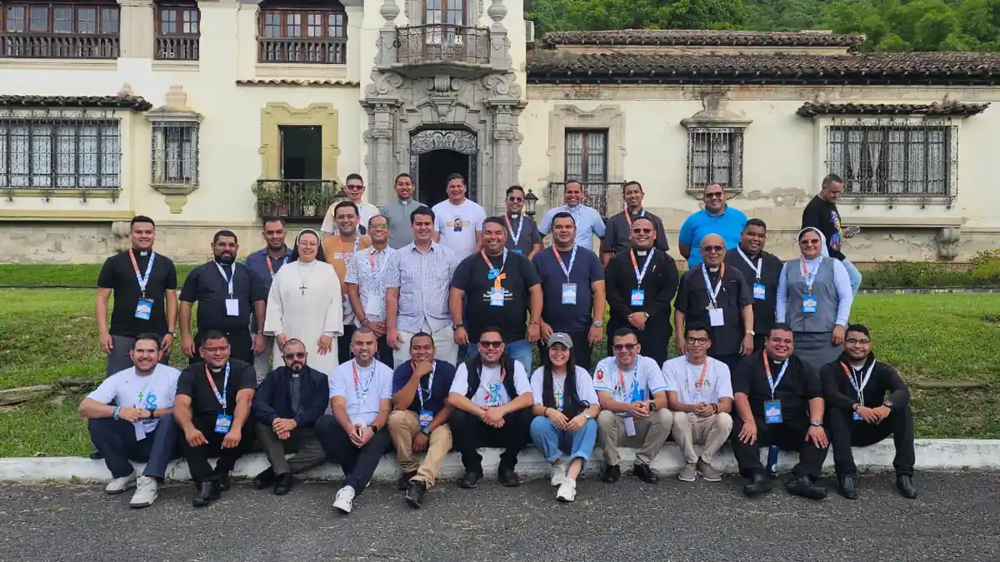
I Encuentro Nacional de Asesores 2026, Casa Monseñor Ibarra, Montalbán, Caracas, que las notas oficiales dicen ser sede de la CEV, del 16 al 18 de junio de 2026. Grupo de asistentes con credenciales posando en dos filas frente a un edificio colonial de fachada clara. Crédito: Centro de Laicos, Familia y Juventud, CEV. 
I Encuentro Nacional de Asesores 2026, Casa Monseñor Ibarra, Montalbán, Caracas, que las notas oficiales dicen ser sede de la CEV, del 16 al 18 de junio de 2026. Grupo grande de asistentes con credenciales posando de pie y sentados frente a un edificio de estilo colonial con montañas verdes detrás. Crédito: Centro de Laicos, Familia y Juventud, CEV. 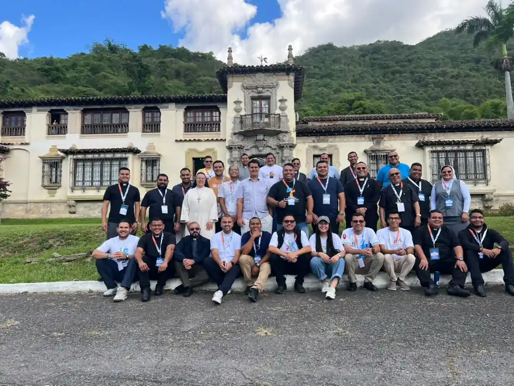
I Encuentro Nacional de Asesores 2026, Casa Monseñor Ibarra, Montalbán, Caracas, que las notas oficiales dicen ser sede de la CEV, del 16 al 18 de junio de 2026. Grupo de asistentes posando frente a un edificio colonial con una torre central y un cielo azul parcialmente nublado. Crédito: Centro de Laicos, Familia y Juventud, CEV. 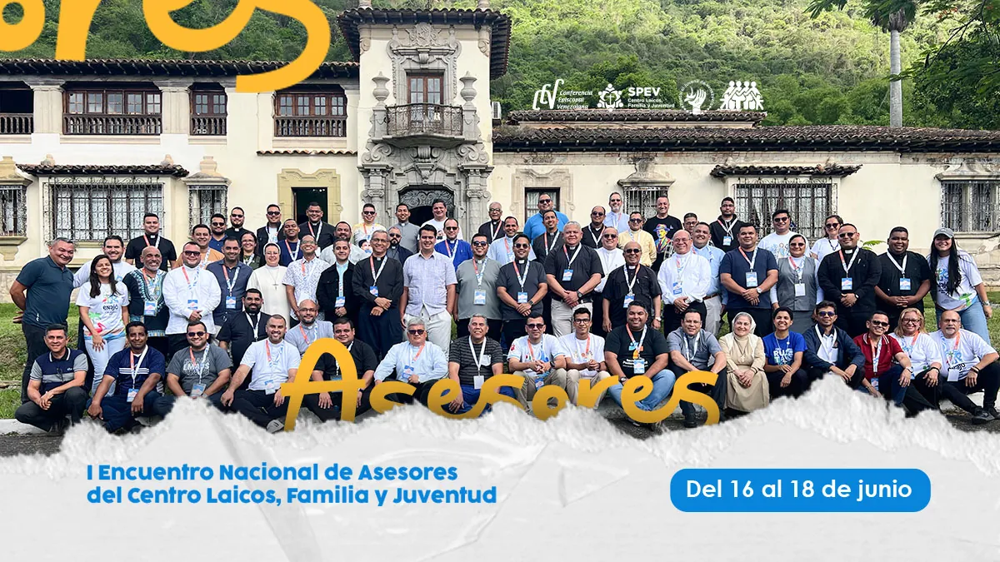
I Encuentro Nacional de Asesores 2026, Casa Monseñor Ibarra, Montalbán, Caracas, que las notas oficiales dicen ser sede de la CEV, del 16 al 18 de junio de 2026. Foto de grupo de los asesores frente a la Casa Monseñor Ibarra, con el título del I Encuentro Nacional de Asesores y las fechas 16 al 18 de junio. Crédito: CEV Medios, fuente: Centro de Laicos, Familia y Juventud. 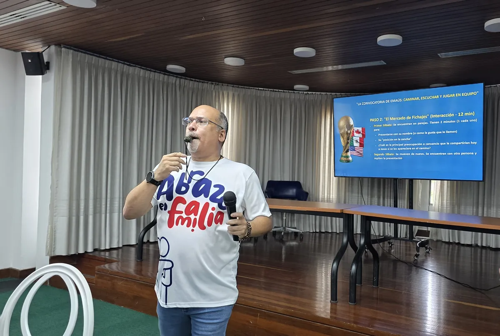
I Encuentro Nacional de Asesores 2026, Casa Monseñor Ibarra, Montalbán, Caracas, que las notas oficiales dicen ser sede de la CEV, del 16 al 18 de junio de 2026. Un asistente habla con micrófono frente a una pantalla. Crédito: CEV Medios, fuente: Centro de Laicos, Familia y Juventud. 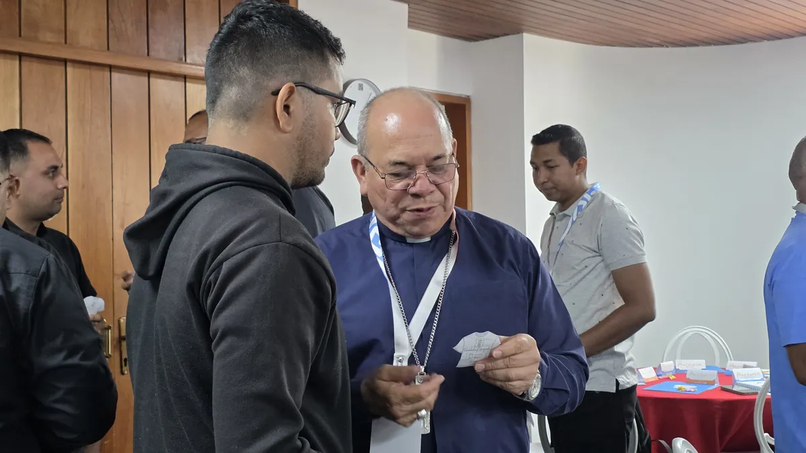
I Encuentro Nacional de Asesores 2026, Casa Monseñor Ibarra, Montalbán, Caracas, que las notas oficiales dicen ser sede de la CEV, del 16 al 18 de junio de 2026. Dos asistentes conversan en el salón durante una dinámica. Crédito: CEV Medios, fuente: Centro de Laicos, Familia y Juventud. 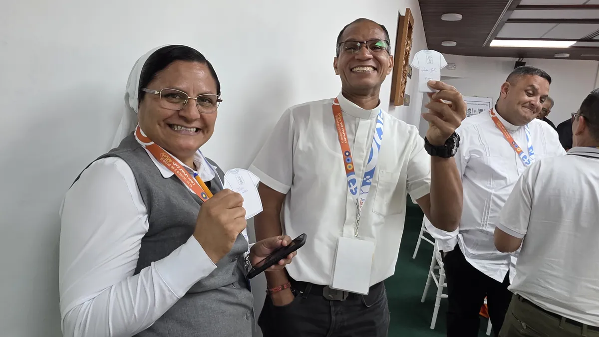
I Encuentro Nacional de Asesores 2026, Casa Monseñor Ibarra, Montalbán, Caracas, que las notas oficiales dicen ser sede de la CEV, del 16 al 18 de junio de 2026. Una religiosa y un sacerdote con credenciales sostienen papelitos de una dinámica. Crédito: CEV Medios, fuente: Centro de Laicos, Familia y Juventud. 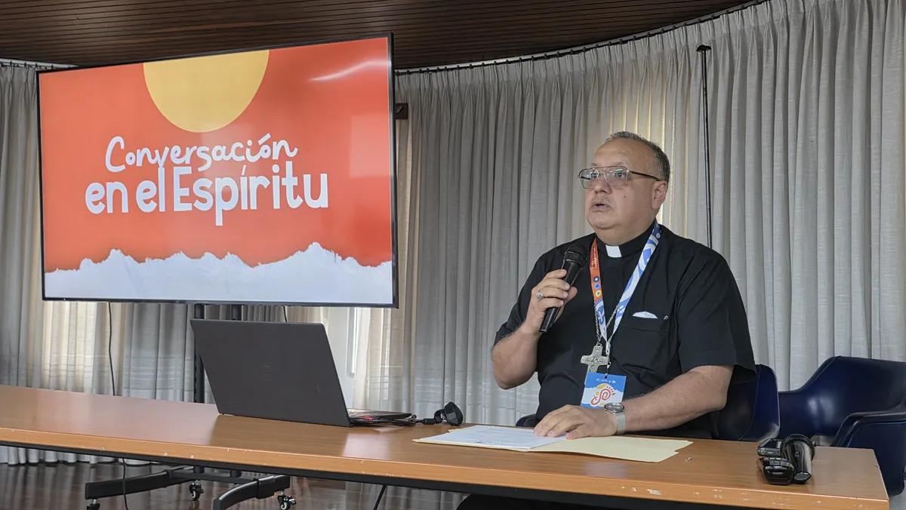
I Encuentro Nacional de Asesores 2026, Casa Monseñor Ibarra, Montalbán, Caracas, que las notas oficiales dicen ser sede de la CEV, del 16 al 18 de junio de 2026. Un sacerdote ante su computadora, junto a una pantalla con el título «Conversación en el Espíritu». Crédito: CEV Medios, fuente: Centro de Laicos, Familia y Juventud. 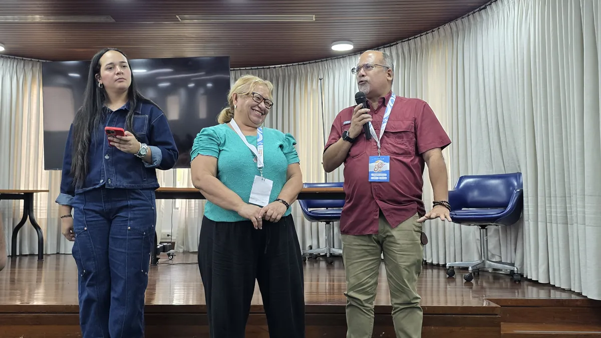
I Encuentro Nacional de Asesores 2026, Casa Monseñor Ibarra, Montalbán, Caracas, que las notas oficiales dicen ser sede de la CEV, del 16 al 18 de junio de 2026. Tres asistentes de pie en el salón durante una actividad de animación. Crédito: CEV Medios, fuente: Centro de Laicos, Familia y Juventud. 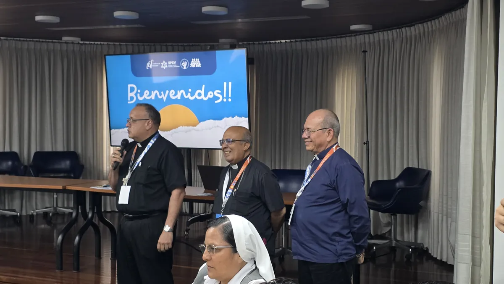
I Encuentro Nacional de Asesores 2026, Casa Monseñor Ibarra, Montalbán, Caracas, que las notas oficiales dicen ser sede de la CEV, del 16 al 18 de junio de 2026. Tres sacerdotes y una religiosa en el salón, tras una pantalla de bienvenida. Crédito: CEV Medios, fuente: Centro de Laicos, Familia y Juventud. 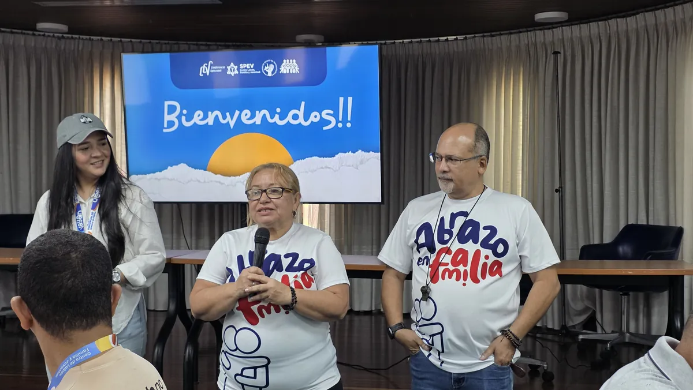
I Encuentro Nacional de Asesores 2026, Casa Monseñor Ibarra, Montalbán, Caracas, que las notas oficiales dicen ser sede de la CEV, del 16 al 18 de junio de 2026. Tres animadores de pie frente a la pantalla de bienvenida. Crédito: CEV Medios, fuente: Centro de Laicos, Familia y Juventud. 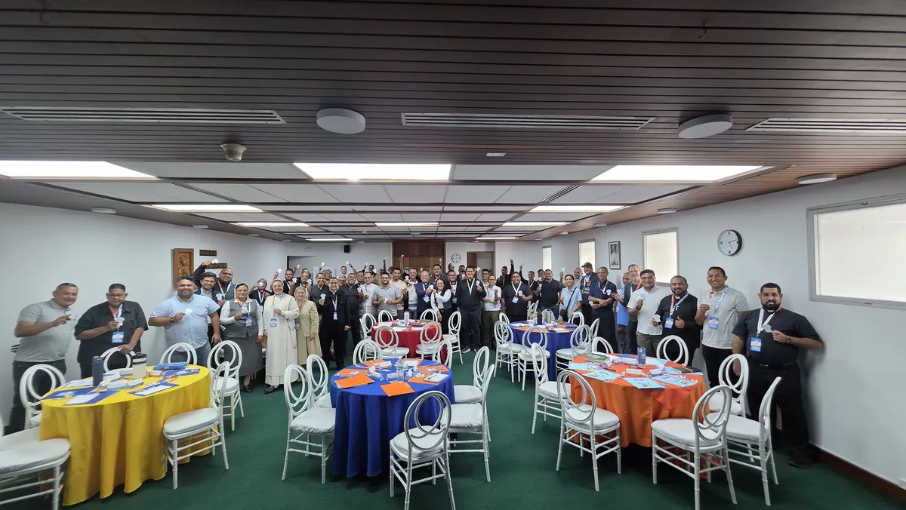
I Encuentro Nacional de Asesores 2026, Casa Monseñor Ibarra, Montalbán, Caracas, que las notas oficiales dicen ser sede de la CEV, del 16 al 18 de junio de 2026. Vista general del salón con mesas de trabajo y asistentes de pie. Crédito: CEV Medios, fuente: Centro de Laicos, Familia y Juventud. 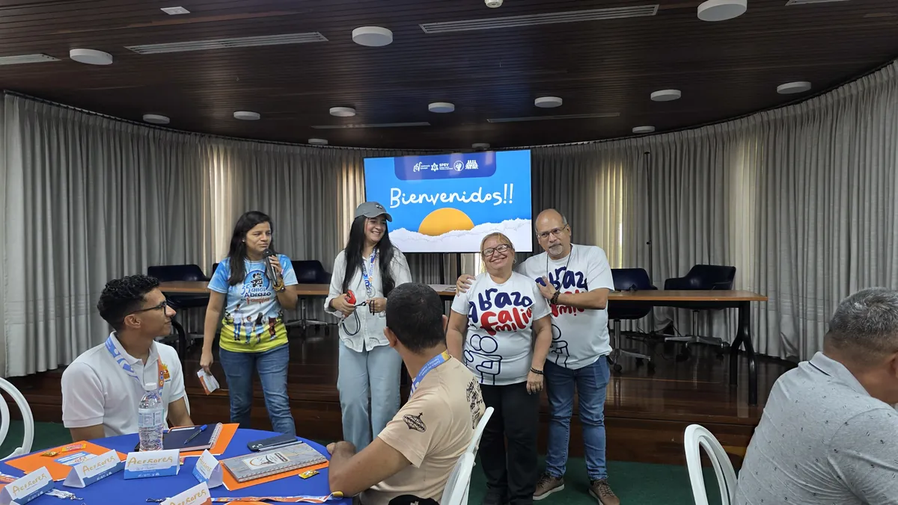
I Encuentro Nacional de Asesores 2026, Casa Monseñor Ibarra, Montalbán, Caracas, que las notas oficiales dicen ser sede de la CEV, del 16 al 18 de junio de 2026. Mesas de trabajo y animadores en el salón. Crédito: CEV Medios, fuente: Centro de Laicos, Familia y Juventud. 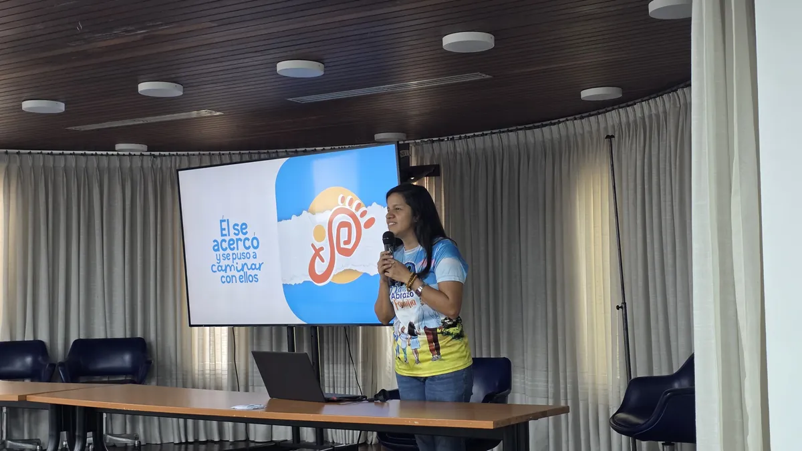
I Encuentro Nacional de Asesores 2026, Casa Monseñor Ibarra, Montalbán, Caracas, que las notas oficiales dicen ser sede de la CEV, del 16 al 18 de junio de 2026. Una animadora habla frente a una pantalla con el lema «Él se acercó y se puso a caminar con ellos». Crédito: CEV Medios, fuente: Centro de Laicos, Familia y Juventud. 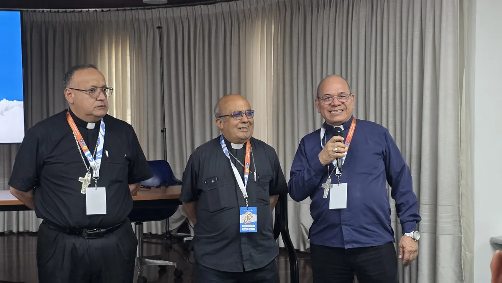
I Encuentro Nacional de Asesores 2026, Casa Monseñor Ibarra, Montalbán, Caracas, que las notas oficiales dicen ser sede de la CEV, del 16 al 18 de junio de 2026. Tres sacerdotes de pie, uno con micrófono, en el salón. Crédito: CEV Medios, fuente: Centro de Laicos, Familia y Juventud. 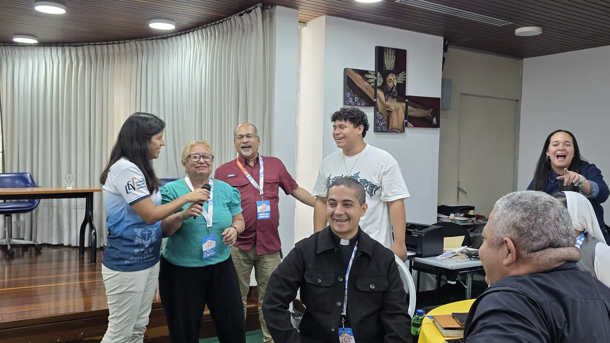
I Encuentro Nacional de Asesores 2026, Casa Monseñor Ibarra, Montalbán, Caracas, que las notas oficiales dicen ser sede de la CEV, del 16 al 18 de junio de 2026. Asistentes conversan de pie en el salón, con un crucifijo al fondo. Crédito: CEV Medios, fuente: Centro de Laicos, Familia y Juventud. 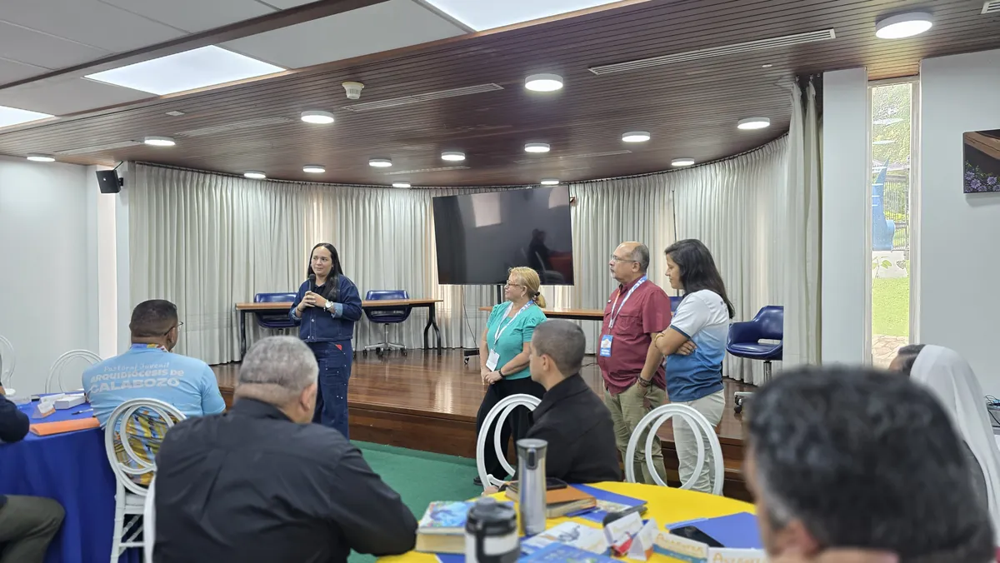
I Encuentro Nacional de Asesores 2026, Casa Monseñor Ibarra, Montalbán, Caracas, que las notas oficiales dicen ser sede de la CEV, del 16 al 18 de junio de 2026. Vista del salón desde atrás, con asistentes en sus mesas. Crédito: CEV Medios, fuente: Centro de Laicos, Familia y Juventud. 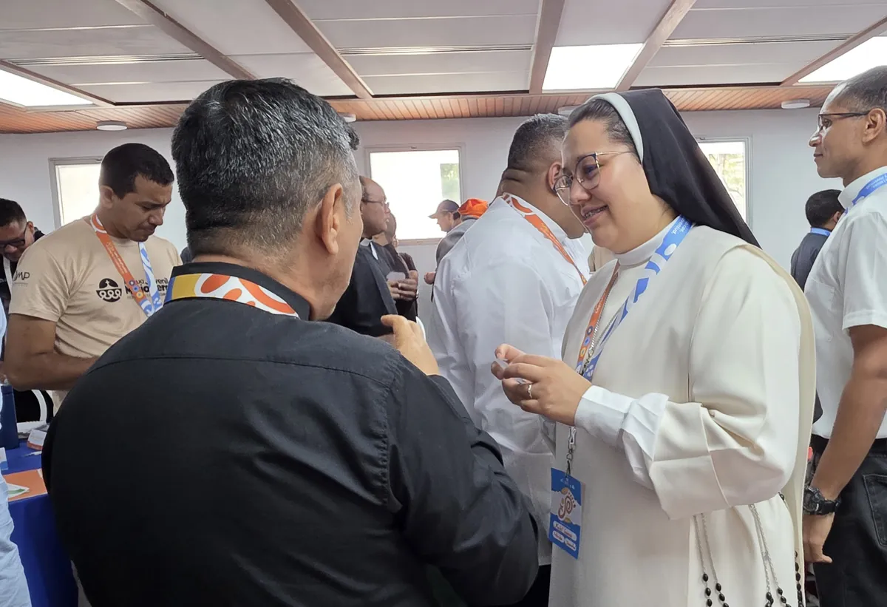
I Encuentro Nacional de Asesores 2026, Casa Monseñor Ibarra, Montalbán, Caracas, que las notas oficiales dicen ser sede de la CEV, del 16 al 18 de junio de 2026. Una religiosa y otros asistentes conversan por parejas. Crédito: CEV Medios, fuente: Centro de Laicos, Familia y Juventud. 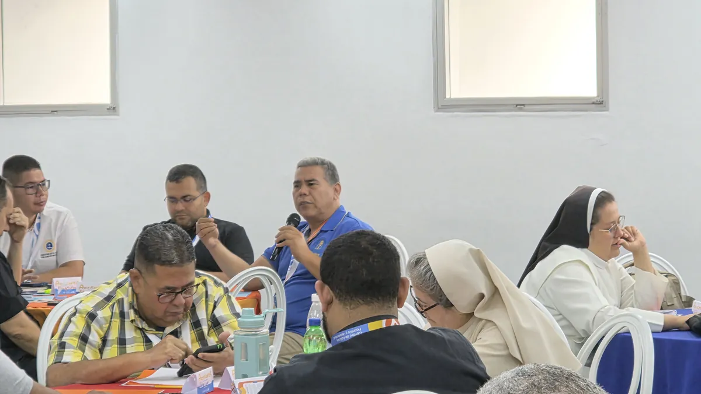
I Encuentro Nacional de Asesores 2026, Casa Monseñor Ibarra, Montalbán, Caracas, que las notas oficiales dicen ser sede de la CEV, del 16 al 18 de junio de 2026. Asistentes sentados en mesas de trabajo, entre ellos una religiosa. Crédito: CEV Medios, fuente: Centro de Laicos, Familia y Juventud. 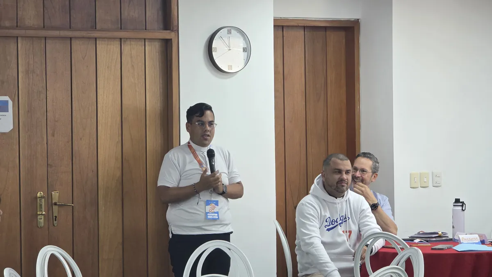
I Encuentro Nacional de Asesores 2026, Casa Monseñor Ibarra, Montalbán, Caracas, que las notas oficiales dicen ser sede de la CEV, del 16 al 18 de junio de 2026. Un asistente interviene con micrófono junto a la puerta del salón. Crédito: CEV Medios, fuente: Centro de Laicos, Familia y Juventud. 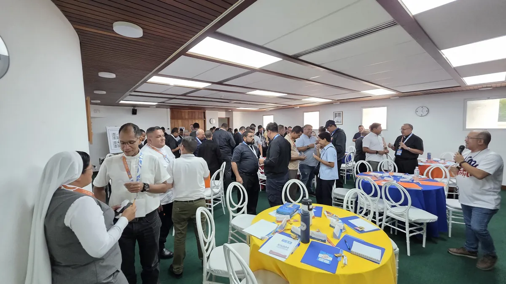
I Encuentro Nacional de Asesores 2026, Casa Monseñor Ibarra, Montalbán, Caracas, que las notas oficiales dicen ser sede de la CEV, del 16 al 18 de junio de 2026. Vista general de la sala con mesas y asistentes de pie. Crédito: CEV Medios, fuente: Centro de Laicos, Familia y Juventud. 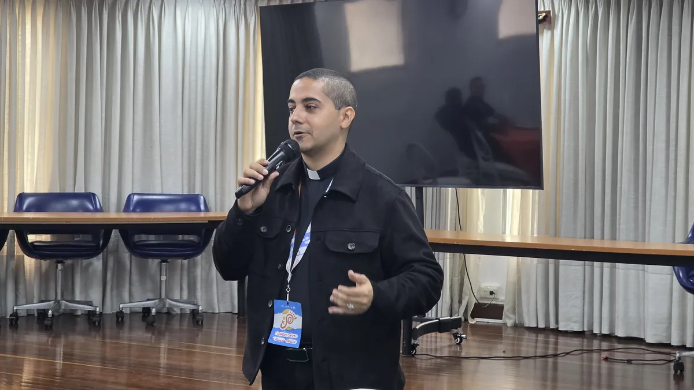
I Encuentro Nacional de Asesores 2026, Casa Monseñor Ibarra, Montalbán, Caracas, que las notas oficiales dicen ser sede de la CEV, del 16 al 18 de junio de 2026. Un sacerdote joven habla con micrófono frente a una pantalla. Crédito: CEV Medios, fuente: Centro de Laicos, Familia y Juventud. 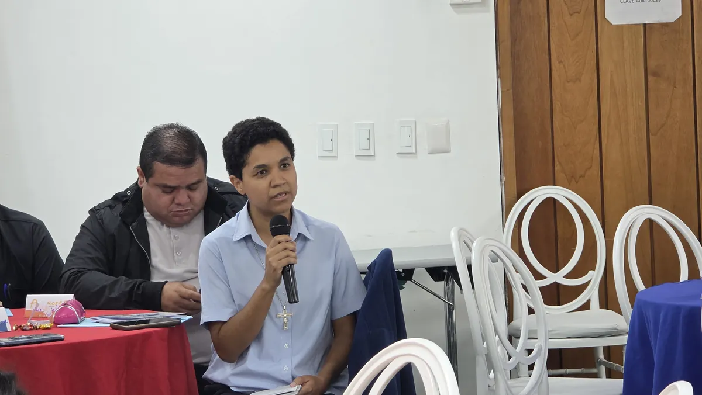
I Encuentro Nacional de Asesores 2026, Casa Monseñor Ibarra, Montalbán, Caracas, que las notas oficiales dicen ser sede de la CEV, del 16 al 18 de junio de 2026. Un joven con micrófono interviene sentado a una mesa. Crédito: CEV Medios, fuente: Centro de Laicos, Familia y Juventud. 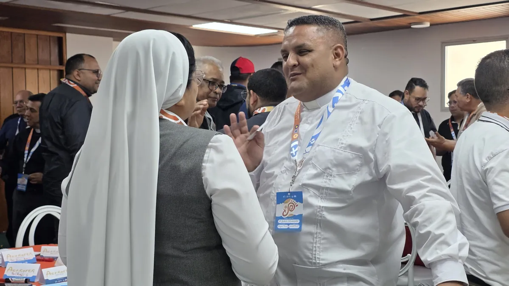
I Encuentro Nacional de Asesores 2026, Casa Monseñor Ibarra, Montalbán, Caracas, que las notas oficiales dicen ser sede de la CEV, del 16 al 18 de junio de 2026. Una religiosa y un sacerdote conversan en la sala. Crédito: CEV Medios, fuente: Centro de Laicos, Familia y Juventud. 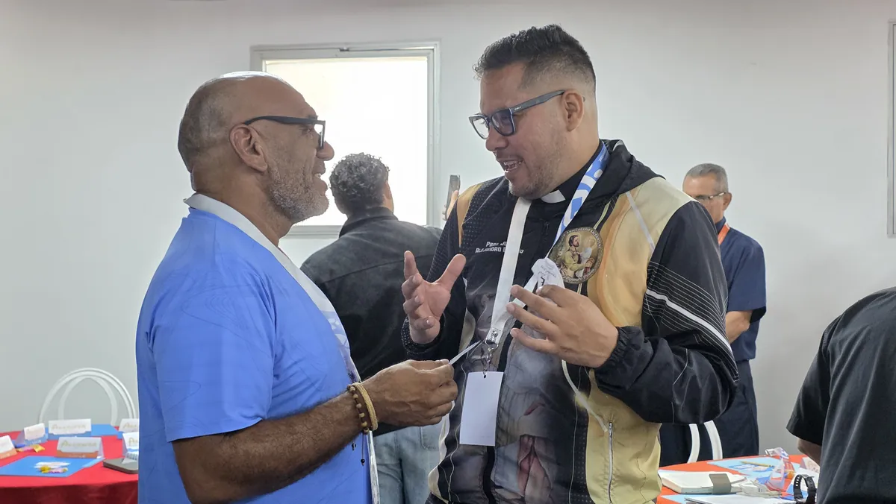
I Encuentro Nacional de Asesores 2026, Casa Monseñor Ibarra, Montalbán, Caracas, que las notas oficiales dicen ser sede de la CEV, del 16 al 18 de junio de 2026. Dos asistentes conversan sosteniendo materiales de trabajo. Crédito: CEV Medios, fuente: Centro de Laicos, Familia y Juventud. 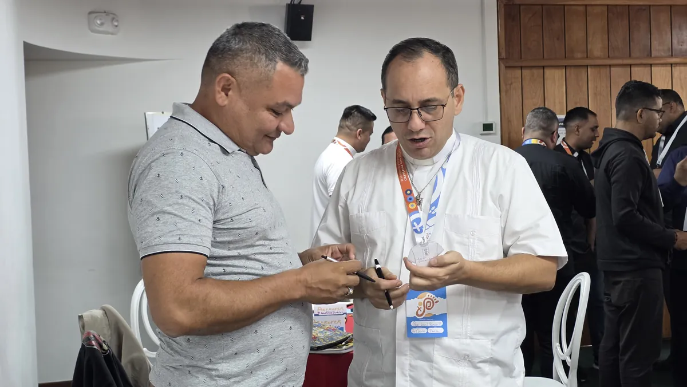
I Encuentro Nacional de Asesores 2026, Casa Monseñor Ibarra, Montalbán, Caracas, que las notas oficiales dicen ser sede de la CEV, del 16 al 18 de junio de 2026. Dos asistentes conversan de pie en el salón. Crédito: CEV Medios, fuente: Centro de Laicos, Familia y Juventud. 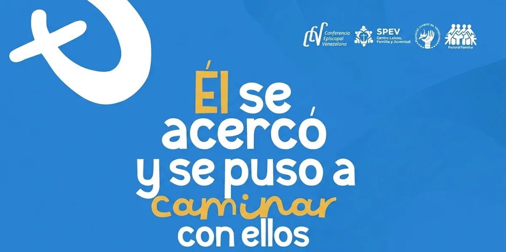
I Encuentro Nacional de Asesores 2026, Casa Monseñor Ibarra, Montalbán, Caracas, que las notas oficiales dicen ser sede de la CEV, del 16 al 18 de junio de 2026. Afiche del I Encuentro Nacional de Asesores 2026 con el lema «Él se acercó y se puso a caminar con ellos». Crédito: CEV Medios, fuente: Centro de Laicos, Familia y Juventud del SPEV.